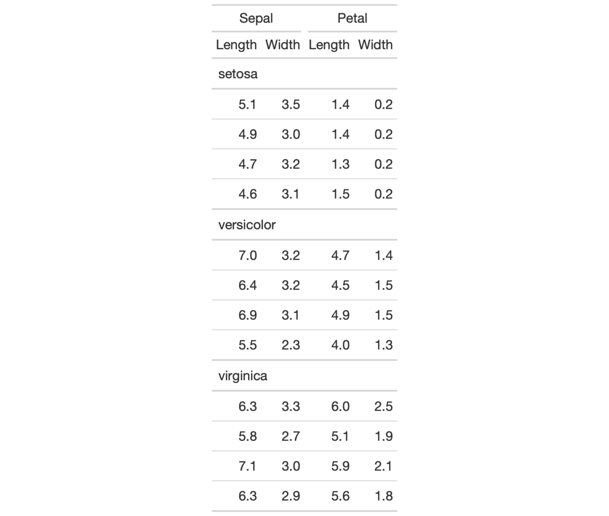

| tab_spanner_delim {gt} | R Documentation |
This function will split selected delimited column names such that the first components (LHS) are promoted to being spanner column labels, and the secondary components (RHS) will become the column labels. Please note that reference to individual columns must continue to be the column names from the input table data (which are unique by necessity).
tab_spanner_delim(
data,
delim,
columns = everything(),
gather = TRUE,
split = c("last", "first")
)
data |
A table object that is created using the |
delim |
The delimiter to use to split an input column name. The delimiter supplied will be autoescaped for the internal splitting procedure. The first component of the split will become the spanner column label (and its ID value, used for styling or for the addition of footnotes in those locations) and the second component will be the column label. |
columns |
An optional vector of column names that this operation should be limited to. The default is to consider all columns in the table. |
gather |
An option to move the specified |
split |
Should the delimiter splitting occur at the |
If we look to the column names in the iris dataset as an example of how
tab_spanner_delim() might be useful, we find the names Sepal.Length,
Sepal.Width, Petal.Length, Petal.Width. From this naming system, it's
easy to see that the Sepal and Petal can group together the repeated
common Length and Width values. In your own datasets, we can avoid a
lengthy relabeling with cols_label() if column names can be fashioned
beforehand to contain both the spanner column label and the column label. An
additional advantage is that the column names in the input table data remain
unique even though there may eventually be repeated column labels in the
rendered output table).
An object of class gt_tbl.

2-3
Other Create or Modify Parts:
tab_footnote(),
tab_header(),
tab_options(),
tab_row_group(),
tab_source_note(),
tab_spanner(),
tab_stubhead(),
tab_style()
# Use `iris` to create a gt table; split # any columns that are dot-separated # between column spanner labels (first # part) and column labels (second part) tab_1 <- iris %>% dplyr::group_by(Species) %>% dplyr::slice(1:4) %>% gt() %>% tab_spanner_delim(delim = ".")